01. Вертикаль
Прямая интерпретация исходной идеи: компактная вертикальная колонна «РБУ» и лёгкий геометрический знак «Хаджох» на полную высоту.

Прямая интерпретация исходной идеи: компактная вертикальная колонна «РБУ» и лёгкий геометрический знак «Хаджох» на полную высоту.

Самый плотный и уверенный вариант. Вертикальный знак построен через негативное пространство, а широкое начертание хорошо работает на технике и наружной рекламе.

Более архитектурное и спокойное решение с тонкой геометрией. Подходит для деловой документации, сайта и аккуратной фирменной системы.

Вертикальные модули подчёркивают производство, а направленные кавычки добавляют ассоциацию с логистикой и движением.